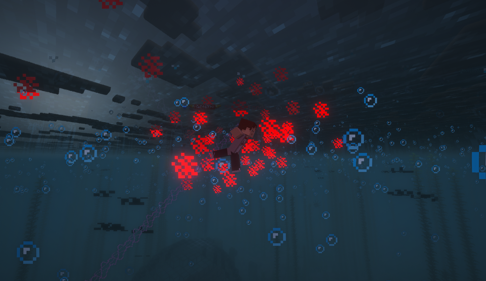
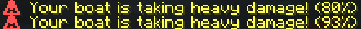

How to cross the sea without dying (probably)
Never swim in open ocean. If your ship sinks, you die. Build it right the first time.

All wood types, glass, wool, torches, chests, and decorative blocks break in storms. Your boat will capsize and sink in open ocean.

Ships can spring leaks during storms. Water spreads quickly (speed 3). You take damage every 30 ticks if flooded.
What to do: Keep 20-30 replacement blocks in your inventory. When you see water inside, find the hole and patch it immediately.
For short trips: Iron block hull (at least 2 blocks thick at waterline), iron doors for entry, stone bricks for superstructure. Carry 50 extra blocks for repairs.
Limit: 100 blocks total before exhaustion. Deep ocean = instant death. Solution: Never swim. Always use a ship.
Starts: 60 seconds in water. Causes damage and slowness. Solution: Get out within 60 seconds or use a ship.
25% chance, 5 min duration. Destroy wooden ships. Lightning causes fires. Solution: Metal/stone hull, repair leaks immediately.
5% chance, 20 block radius. Inescapable pull, 2 damage/sec. Solution: Navigate around them if you see the visual.
Sharks, Sea Terrors, Sirens, Kraken. 2.5x more at night. Solution: Stay in your ship, don't bleed in water.
20% chance, 80 sec duration. Causes blindness. Solution: Use a compass to navigate or wait it out.
All dangers 2.0x worse at night. Creatures 2.5x more common. Visibility reduced. Don't travel at night unless you're experienced and well-equipped.
Items sink and are lost forever when drowning. No grave, no recovery. 100% experience loss. Respawn with 5 minutes of weakness.